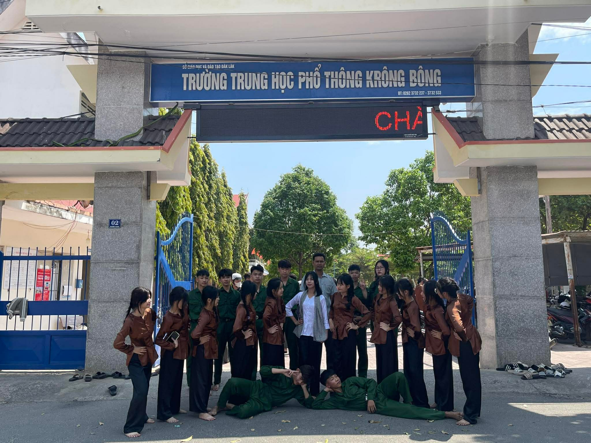
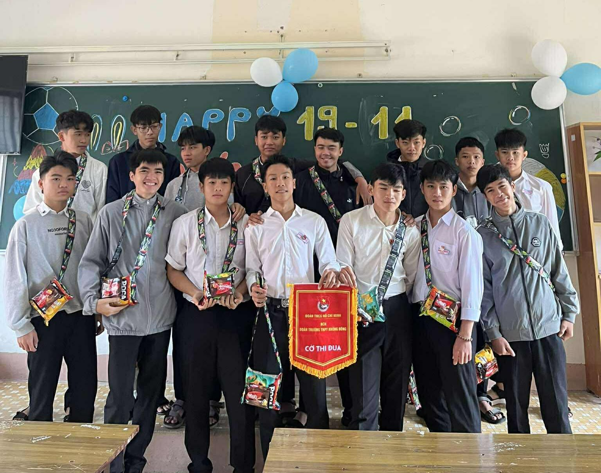

Có những khoảnh khắc trong cuộc đời học sinh mà sau này, khi đã trưởng thành, chúng ta vẫn sẽ nhớ mãi, nhớ bằng tất cả cảm xúc chân thật nhất của tuổi trẻ. Và đối với tôi, buổi biểu diễn văn nghệ với tác phẩm về chị Võ Thị Sáu chính là một khoảnh khắc như thế. Một khoảnh khắc không chỉ đơn giản là đứng trước mọi người để biểu diễn, mà còn là lúc chúng tôi thực sự sống trong cảm xúc, sống trong tinh thần của một thời kỳ lịch sử hào hùng.
Hôm đó là một ngày nắng nhẹ, bầu trời trong xanh như cũng đang dõi theo từng bước chân của chúng tôi. Khi đứng trước cổng trường quen thuộc – nơi mà mỗi ngày chúng tôi đi qua với những câu chuyện vui buồn của tuổi học trò – tôi bỗng cảm thấy nơi này trở nên đặc biệt hơn bao giờ hết. Không còn chỉ là cổng trường nữa, mà nó giống như một sân khấu lớn, nơi chúng tôi được thể hiện không chỉ là một tiết mục văn nghệ, mà còn là lòng biết ơn, là sự kính trọng đối với một người anh hùng dân tộc.
Chúng tôi đã dành rất nhiều thời gian để tập luyện cho tiết mục này. Những buổi chiều sau giờ học, khi ánh nắng dần tắt, cả lớp vẫn ở lại cùng nhau tập từng động tác, từng ánh mắt, từng biểu cảm. Có những lúc mệt, có những lúc tập mãi mà vẫn chưa đều, có những lúc cả nhóm bật cười vì những sai sót nhỏ. Nhưng chính những khoảnh khắc đó lại làm cho chúng tôi gắn bó với nhau hơn. Không còn là những cá nhân riêng lẻ, chúng tôi trở thành một tập thể, cùng hướng đến một mục tiêu chung.
Khi khoác lên mình bộ trang phục biểu diễn, tôi bỗng cảm thấy mình không còn là chính mình nữa, mà như đang trở thành một phần của câu chuyện. Nhìn bạn đứng ở giữa – trong vai chị Võ Thị Sáu – với ánh mắt kiên cường và bình tĩnh, tôi bỗng cảm thấy xúc động. Dù chỉ là một vai diễn, nhưng trong giây phút đó, chúng tôi như cảm nhận được phần nào tinh thần bất khuất của chị. Một người con gái còn rất trẻ, nhưng đã dũng cảm đối mặt với mọi hiểm nguy vì Tổ quốc.
Khoảnh khắc cả lớp đứng cùng nhau, nhìn về phía trước, tôi cảm nhận rõ ràng sự tự hào đang lan tỏa trong lòng mình. Không phải tự hào vì chúng tôi biểu diễn giỏi, mà là tự hào vì chúng tôi được sống trong một đất nước hòa bình, được học tập, được vui chơi, được theo đuổi những ước mơ của mình. Những điều mà thế hệ trước đã phải đánh đổi bằng rất nhiều hy sinh.
Tôi nhìn những người bạn xung quanh mình – những người mà mỗi ngày vẫn cùng nhau học tập, cùng nhau nói cười – và nhận ra rằng đây chính là những người sẽ trở thành một phần ký ức đẹp nhất của tuổi học trò. Sau này, mỗi người sẽ đi một con đường riêng, sẽ có những cuộc sống riêng, nhưng chắc chắn rằng khoảnh khắc này sẽ luôn ở lại trong trái tim mỗi người.
Có thể sau này, khi đã trưởng thành, khi đã bước ra khỏi mái trường này, chúng tôi sẽ không còn nhiều cơ hội để đứng cùng nhau như thế này nữa. Nhưng tôi tin rằng, mỗi khi nhìn lại bức ảnh này, chúng tôi sẽ nhớ về một thời tuổi trẻ đầy nhiệt huyết, đầy cảm xúc, và đầy những kỷ niệm không thể nào quên.
Buổi biểu diễn đó không chỉ là một tiết mục văn nghệ. Nó là một bài học. Một bài học về lịch sử, về lòng dũng cảm, về sự hy sinh. Nhưng hơn hết, nó là một bài học về tình bạn, về sự đoàn kết, và về giá trị của những khoảnh khắc hiện tại.
Tuổi học trò giống như một cuốn sách, và mỗi ngày là một trang mới. Có những trang vui, có những trang buồn, có những trang bình thường, và cũng có những trang thật đặc biệt. Và đối với tôi, ngày hôm đó – ngày chúng tôi biểu diễn tác phẩm về chị Võ Thị Sáu – chính là một trong những trang đẹp nhất của cuốn sách tuổi trẻ.
Tôi biết rằng, thời gian sẽ trôi đi, và chúng tôi cũng sẽ trưởng thành. Nhưng tôi hy vọng rằng, dù sau này có đi đâu, làm gì, chúng tôi vẫn sẽ nhớ về nhau, nhớ về mái trường này, và nhớ về khoảnh khắc mà chúng tôi đã cùng nhau đứng ở đó – dưới cổng trường thân quen – với tất cả niềm tự hào, niềm xúc động, và niềm hạnh phúc của tuổi học trò.
Và có lẽ, nhiều năm sau, khi vô tình nhìn lại bức ảnh này, tôi sẽ mỉm cười và nghĩ rằng:
“Thanh xuân của mình, thật đẹp.”

Có những ngày trôi qua rất bình thường, nhưng cũng có những ngày mà sau này khi nhớ lại, chúng ta mới nhận ra rằng đó là một phần thật đẹp của thanh xuân. Ngày Quốc tế Nam giới năm ấy chính là một ngày như thế đối với chúng tôi – một ngày không quá lớn lao, không có những điều quá đặc biệt, nhưng lại chứa đựng rất nhiều cảm xúc, tiếng cười, và những kỷ niệm mà có lẽ sau này sẽ không bao giờ có lại được nữa.
Hôm đó là một buổi sáng như bao buổi sáng khác. Chúng tôi vẫn đến lớp, vẫn ngồi vào chỗ quen thuộc, vẫn nói chuyện với nhau về những điều rất bình thường: bài tập hôm qua, tiết kiểm tra sắp tới, hay những câu chuyện vu vơ của tuổi học trò. Không ai nghĩ rằng hôm đó sẽ trở thành một ngày đáng nhớ đến như vậy. Nhưng rồi khi bước vào lớp, nhìn thấy bảng được trang trí, nhìn thấy những món quà nhỏ được chuẩn bị sẵn, chúng tôi bắt đầu cảm nhận được rằng hôm nay không giống những ngày bình thường khác.
Khi từng bạn nam được nhận món quà của mình – một chiếc balo nhỏ chứa đầy bánh kẹo – cảm giác lúc đó thật khó để diễn tả thành lời. Đó không phải là vì món quà quá lớn, mà là vì ý nghĩa của nó. Một món quà tuy nhỏ, nhưng chứa đựng trong đó là sự quan tâm, là tình cảm, là sự trân trọng mà các bạn đã dành cho nhau. Cầm món quà trên tay, tôi bỗng cảm thấy trong lòng mình có một cảm giác rất lạ – vừa vui, vừa xúc động, vừa biết ơn.
Nhìn xung quanh, tôi thấy những người bạn của mình đang cười. Có những nụ cười rất tươi, rất thật, không phải vì vật chất, mà vì niềm vui được quan tâm, được nhớ đến. Có những bạn cầm món quà lên, nhìn ngắm nó như một thứ gì đó rất quý giá. Có những bạn đùa giỡn với nhau, so sánh xem ai được nhiều bánh hơn, ai được ít hơn. Những tiếng cười vang lên trong lớp, làm cho không gian trở nên ấm áp hơn bao giờ hết.Khoảnh khắc cả nhóm đứng lại với nhau để chụp bức ảnh kỷ niệm, tôi chợt nhận ra rằng đây không chỉ đơn giản là một bức ảnh. Nó là một phần của tuổi trẻ, là một phần của ký ức mà sau này khi nhìn lại, chúng tôi sẽ nhớ về với tất cả sự trân trọng. Mỗi người trong bức ảnh đều mang một biểu cảm khác nhau, nhưng tất cả đều có chung một điều – đó là niềm vui.
Tôi nhìn những người bạn xung quanh mình – những người mà mỗi ngày vẫn cùng nhau đi học, cùng nhau nói chuyện, cùng nhau trải qua những ngày tháng của tuổi học trò – và tôi chợt nghĩ rằng, sau này, khi chúng tôi trưởng thành, khi mỗi người đi một con đường riêng, sẽ không còn những ngày như thế này nữa. Sẽ không còn những buổi sáng cùng nhau ngồi trong lớp, sẽ không còn những món quà nhỏ nhưng đầy ý nghĩa, sẽ không còn những tiếng cười vang lên trong không gian quen thuộc này.
Tuổi học trò là khoảng thời gian mà chúng ta thường nghĩ rằng nó sẽ kéo dài mãi mãi. Nhưng thực ra, nó trôi qua rất nhanh. Mới ngày nào chúng tôi còn là những học sinh mới bước vào trường, còn bỡ ngỡ với mọi thứ xung quanh. Vậy mà bây giờ, chúng tôi đã trở thành những học sinh cuối cấp, đang dần bước đến những ngày cuối cùng của quãng đời học sinh.
Chiếc balo nhỏ chứa đầy bánh kẹo mà chúng tôi nhận được hôm đó có thể sẽ được ăn hết sau vài ngày, nhưng ý nghĩa của nó sẽ không bao giờ biến mất. Nó sẽ luôn ở đó, trong ký ức của chúng tôi, như một biểu tượng của tình bạn, của sự quan tâm, của những ngày tháng tuổi trẻ đầy ý nghĩa.Có thể sau này, khi đã trưởng thành, khi đã có những công việc riêng, những cuộc sống riêng, chúng tôi sẽ không còn nhớ rõ từng chi tiết của ngày hôm đó. Nhưng chắc chắn rằng, khi nhìn lại bức ảnh này, chúng tôi sẽ nhớ về cảm giác lúc đó – cảm giác được đứng cùng nhau, được cười cùng nhau, được là một phần của một tập thể.
Có những món quà có giá trị lớn, nhưng lại không để lại nhiều cảm xúc. Nhưng cũng có những món quà rất nhỏ, rất đơn giản, nhưng lại có thể ở lại trong trái tim chúng ta mãi mãi. Và đối với tôi, chiếc balo bánh kẹo ngày hôm đó chính là một món quà như vậy.
Nó không chỉ là bánh kẹo. Nó là ký ức.
Nó không chỉ là một món quà. Nó là tình bạn.
Nó không chỉ là một ngày bình thường. Nó là một phần của thanh xuân.
Một kỷ niệm mà có lẽ, cả đời này, sẽ không bao giờ quên.